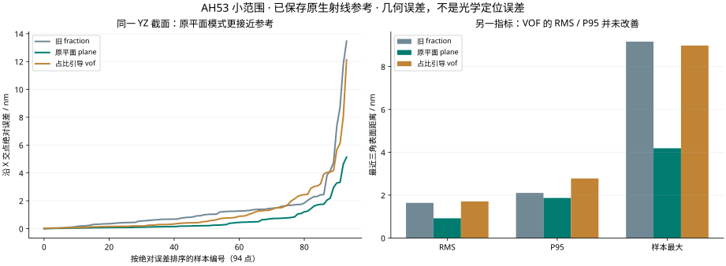

这次按三层关系阅读
v0.3已正式接入流式裁剪，并新增可选平面优化与活跃块提取。正文先讲稳定的完整转换主线；新增参数、适用条件与真实时间/内存/文件大小对照，请看v0.3升级说明。默认重建表面仍与此前一致，平面重三角化需显式加--planar-optimize。
本页随公共仓库 coventor-vdata-to-lumerical 一起发布，可下载后离线打开。文中的 D:\CoventorProjects 路径是作者本机 AH53 案例；原始模型、商业软件和验证环境不包含在源码中。首次下载可先照 README 建立本地 .venv，并使用第7部分的人工小样走通转换。真实案例中的裁剪坐标只适用于对应 AH53 输入。
先理解原来的完整过程
再回到具体步骤理解改进
最后操作和查阅细节
前 3 部分描述一个连续过程；第 4、5 部分是针对这个过程的两项并列改进；第 6 部分检查改进是否有效；第 7 部分把已经理解的过程对应到命令。不是每出现一个标题，就开始一个互不相关的新话题。
1. 已经有了刻蚀结果，为什么还需要这个程序？
我们已经在 Coventor 中建立过 AH53：硅标记是凸出的，周围被刻蚀，名义刻蚀深度是 300 nm。倾斜侧壁、横向侵蚀、圆角等工艺效果，应该由前面的工艺模型决定。工艺仿真完成后，导出的 .vdata 就是后续转换的起点。
接下来要研究光照到这个标记上会产生什么响应，因此需要把这份结构交给 Lumerical 或自研 FDTD。两套程序处理数据的方式不同：VDATA 按自己的格式保存材料分布；FDTD 的几何入口需要它能够解释的数组、表面或几何对象。中间缺少的是把已有结构的数据读懂，再整理成接收端能使用的形式。
这个转换器的任务是：读取已导出的 VDATA，取出材料及空间信息，按所选方法建立表面，再保存为可供后续程序使用的文件。
所以，本程序输入的是一个已经存在的 .vdata，不是刻蚀时间、气体配方或掩模工艺。它不会因为你运行了一次转换，就重新计算一次刻蚀；也不会因为输出了一个几何文件，就已经计算了电磁场。
进入转换器以后，发生的是下面四件事
点击每一步，可以看到它具体拿到什么、处理什么、交出什么。后文就沿着这四步展开。
输入：原始 VDATA 文件。
处理：解析文件、解压数据、解释坐标和材料记录。
输出：每个格子有多少硅、多少空气，以及格子的位置和大小。此时还没有新建三角表面。
这条四步路线是本教程重点讲的三角表面转换路线。若自研求解器能够直接消费体素和占比，读出材料后也可以直接交给它，无须先做三角表面。本程序保留体素数组，正是为了保留这条选择。下面先把已经使用的表面路线讲透。
程序读取的原始文件：D:\CoventorProjects\AH53_Si_300nm_Nonideal\AH53_Si_300nm_Nonideal.vdata
程序本身所在目录：D:\CoventorProjects\VDATA_Standalone
运行一次以后：在指定的新输出目录中写出数组、几何、坐标说明和导入脚本；原始 VDATA 保留。
现在知道程序是从哪里接手、交给谁。要理解它有没有正确保留结构，先要知道它从 VDATA 中读出的究竟是什么。因此下一步只讨论“读出材料”，暂时还不讨论三角面和压缩。
2. 程序先把文件还原成“每个小格子装了什么”
把标记所在空间切成很多小立方体，每一个小立方体就叫体素。它类似二维图片里的像素，但还多了一维厚度。体素的编号告诉我们它在排列中的位置；体素间距和空间原点，把这个编号变成实际坐标。
在目前这份完整 AH53 文件中，每个格子的边长为 20 nm，格子数量是 800×1400×50。这里讨论的“20 nm”是源工艺结构的采样间距，还不是后面 FDTD 必须采用的电磁网格尺寸。
格子内部可以是纯材料，也可以跨过材料边界
深入硅内部的格子可以全部是硅；远离结构的格子可以全部是空气；跨过侧壁的格子可能一部分是硅，另一部分是空气。文件除了记录材料名称对应的编号，还保存两种材料各占多少体积。
| 示意格子 | 硅占比 | 直观意思 |
|---|---|---|
| 硅内部 | 1，也就是 100% | 这一格全部是硅 |
| 侧壁附近 | 0.25，也就是 25% | 这一格四分之一的体积是硅 |
| 空气内部 | 0 | 这一格没有硅 |
20 nm 立方格的总体积是 20×20×20=8000 nm³。25% 硅表示其中有 2000 nm³ 的硅。这个数字描述的是整格的体积比例，不是硅的折射率，也没有直接给出侧壁坐标。
记事本里的长串字符，是这些数据的包装形式
打开 VDATA 看到大量英文字母和数字，是因为原始数值先被压缩，再被写成适合放进文本文件的编码。程序做的第一件事，就是按已验证的格式把包装拆开：先读文件结构，再把字符还原成字节，最后解压成材料记录。
这一步称为解码。它的目标是把文件里原来保存的数字准确取出来。它不需要猜测侧壁朝哪里倾斜，也没有生成一张更平滑的表面。
已支持的记录每格有三个字节，例如 [32, 2, 255]。在本例的材料编号约定中，2 是硅，255 是隐式空气；32/128=0.25，所以这条记录表示 25% 硅和 75% 空气。另一份文件的材料编号未必相同，因此程序还必须读取它自己的材料表，并补充空气的约定。
只有材料比例还不够，还要把格子放到正确位置
假设某格编号是 (i,j,k)，边长为 h，原点为 origin，那么低角点是 origin+(i,j,k)×h，中心要再分别加半个格子。对于 20 nm 格子，“低角点”和“中心”相差 10 nm，弄反了会造成明显的整体位移。
程序还统一长度单位，确认 X、Y、Z 的顺序，并保存材料编号到材料名称的对应关系。这样，数组里的一条记录才有完整含义：在这个物理位置、这个大小的格子里，硅占多少、空气占多少。
完成这一步时，程序手里有什么？一个三维材料记录数组，加上原点、间距和材料表。
对应的输出是什么？voxels.npz 保存原始材料记录；voxel_metadata.json 说明这些记录的坐标和含义。默认转换也会保留它们。
此时还没有什么？尚未新建三角网格；材料体积比例还没有被转换成一个确定的表面。
读出材料后，问题随之变得具体：我们知道一格里有多少硅，但要向几何软件交出表面，还需要知道这些硅究竟分布在格子的哪一侧。这个信息差，正是下一步“重建”的原因。
3. 知道硅有多少，还要确定表面在哪里
同样是 25%，可以对应不同的界面
下面三幅图都代表同一个格子的截面，绿色面积都是 25%。为便于理解，假设结构沿垂直纸面的方向保持不变，那么面积占比就等于体积占比。硅可以位于左侧、下侧，也可以位于斜切的一角。占比相同，界面方向却不同。
因此，仅凭单格占比，表面位置和方向无法唯一确定。程序必须采用一个额外规则，把材料记录变成表面。这个带有假设的步骤叫表面重建。它与上一节“准确读出原数字”的解码是不同性质的操作。
原方法怎样给出一个表面？先用三个格子算清楚
把三个 20 nm 格子排成一行，中心分别在 X=−20、0、20 nm。左格全部是硅，中格 25% 是硅，右格全部是空气。
| 格子 | 中心 X | 硅占比 |
|---|---|---|
| 左格 | −20 nm | 1 |
| 中格 | 0 nm | 0.25 |
| 右格 | 20 nm | 0 |
为了有一个可以核对的答案，这个教学例子额外假定：界面是平面，垂直于 X 轴，硅位于左侧。中格从 −10 nm 延伸到 +10 nm。25% 的 20 nm 是 5 nm，因此硅从 −10 nm 填到 −5 nm，真正的平面位置就是 −5 nm。
原来的 fraction 方法没有先解这个切格体积问题。它把三个占比数字 1、0.25、0 放在三个格子中心，并假定相邻中心之间的数值线性变化；然后寻找数值为 0.5 的位置，作为界面。
为什么会选 0.5？因为它是纯材料 1 与背景 0 的中间值，是一个常见的分界约定。它的含义是“在插值场中找 0.5 的位置”，不是“把所有占比大于 50% 的格子完整填成实体”。但这种约定并不能保证恢复真实界面。
在本例中，0.5 位于左格中心的 1 与中格中心的 0.25 之间。从 1 降到 0.5，走过总下降量 0.75 的 2/3，所以估计位置是：
= −6.667 nm
它与已知平面 −5 nm 相差约 −1.667 nm。这里没有做减面，没有做光学计算，也没有文件损坏；偏差已经发生在把整格体积占比当作中心样本来找界面的过程中。
动手看一维偏差
假设硅在界面左侧，中间体素宽 h=20 nm，中心位于 0。左邻格全硅、右邻格全空气。调节中间格的硅占比，比较精确平面位置和旧 0.5 插值位置。
这是已知单一轴对齐平面的教学例子，不是用曲线外观判断真实刻蚀精度。量化到 1/128 的原占比本身也存在有限分辨率。
现在真正把“交点”算成“三角形”：仍然使用刚才的 25% 例子
你说的“三角文件”通常指 STL。在这条路线中，“体素转 STL”实际包含两个连续动作：先计算出三角网格，再把网格写成 STL 文件。前者决定形状，后者决定文件里怎样记录。我们现在把前者展开到每一个数字。
刚才只沿一条线算出了 X=−6.667 nm。要得到有面积的表面，还需要在旁边几条线上做同样的计算。下面暂时假设这一小块侧壁沿 Y、Z 方向没有变化；它是讲解算法的局部例子，不代表整个 AH53 都是平面。
先取相邻八个体素中心，组成一个计算小立方体
沿 X、Y、Z 各取两个相邻中心，一共 2×2×2=8 个中心。它们的间距仍是 20 nm。为方便算数，让两个 X 坐标是 −20 和 0 nm，两个 Y 坐标是 0 和 20 nm，两个 Z 坐标也是 0 和 20 nm。
| 采样点所在的一侧 | 四个中心坐标（nm） | 每个中心使用的硅占比 |
|---|---|---|
| X=−20 的一侧 | (−20,0,0)、(−20,20,0)、(−20,20,20)、(−20,0,20) | 1 |
| X=0 的一侧 | (0,0,0)、(0,20,0)、(0,20,20)、(0,0,20) | 0.25 |
这里有一个很容易误会的地方：计算小立方体的八个角，是八个不同体素的中心。源文件里一个体素原本只给出一条材料记录；当前方法把这条记录的占比当作该体素中心的数值。它没有凭空得到“同一个源体素八个角上的八条材料记录”。
查看十二条边，找出哪些边跨过 0.5
一个小立方体有 12 条边。对于当前例子，四条沿 X 方向的边，一端数值是 1，另一端是 0.25。按照线性变化的假设，中间必然经过 0.5，所以每条边上都能算出一个界面交点。其余八条边两端都是 1，或两端都是 0.25，因此不在这些边上生成交点。
对于任意一条两端数值不同、并跨过分界值的边，设起点位置是 A、终点位置是 B，端点数值为 fA、fB，分界值为 L。先算从 A 向 B 走了几成，再算坐标：
P = A + t × (B − A)
把本例的 L=0.5、fA=1、fB=0.25 代进去，t=2/3。也就是从 X=−20 的端点向 X=0 走 2/3；四条边上的交点都在 X=−20+20×2/3=−6.667 nm。一般情况下，各条边的端点数值不同，交点位置也不同，表面就会倾斜或弯折。
点击下面四步，看八个数值怎样变成两个三角形。图中的线框是中心点组成的计算单元；显示为斜四边形的面只是三维投影。
八个中心给出八个数值：左侧四个1，右侧四个0.25。此时还没有三角形。
四个交点怎样变成两个三角形？
上一步给出的只是四个点。当前排列中，它们围成一个矩形面片。沿一条对角线把它分开，就得到两个三角形。下面给这些点编号，坐标保留三位小数：
顶点表 V（单位：nm） 编号0 / P0 = (−6.667, 0, 0) 编号1 / P1 = (−6.667, 20, 0) 编号2 / P2 = (−6.667, 20, 20) 编号3 / P3 = (−6.667, 0, 20) 三角面表 F 第一个三角形 = [0, 1, 2] → 使用 P0、P1、P2 第二个三角形 = [0, 2, 3] → 使用 P0、P2、P3
这样，“材料占比数组”就变成了“顶点坐标＋三角面连接关系”。这里的连接顺序使面朝向 +X，即本例从硅指向空气的一侧。实际库可能给顶点排不同的编号，或使用另一条对角线；对于这个平面矩形，它们可以描述同一片几何，不能只比较数组的编号判断对错。
在更一般的计算单元里，跨界的边会多于或少于四条，无法总按这个矩形来切。Marching Cubes 会根据八个角位于分界值哪一侧来选择连接方式，并处理有歧义的情况。我们的程序调用开源库的 Lewiner Marching Cubes，由库完成这些连接规则；它不是将空间里最近的三个点随意拼在一起。某些复杂情况还会使用辅助顶点，因此“顶点一定全在十二条边上”只适用于这里展示的简单情形。算法及输出数组的官方说明
这两个三角形如何变成整个 AH53 表面？
程序把这个局部处理应用到整个三维数组，默认逐个相邻中心单元处理。内部全在分界值同一侧的单元不生成表面；跨过界面的单元产生三角片。相邻单元沿共享边使用相同的交点，局部片逐渐拼接成结构表面。程序最终拿到的是整张表面的顶点数组和三角面数组。
注意数量关系：一个源体素不固定对应一个三角形，也不固定对应十二个三角形。这里每次处理的是八个相邻中心围成的单元；输出零个、一个或多个面，取决于局部数值。只有把所有占用体素先当成完整小方块，再把暴露的方块面剖成三角形，才是另一条“方块外壳”路线；当前 fraction 路线没有这样做。
为了在完整区域或裁剪边缘形成封闭壳，当前 fraction 实现还会在数组外补一层数值0的样本，再提取表面。这会产生人工闭合面，并可能使格子尺度的角发生倒角。最后程序修正中心位置与补层的坐标偏移，保存物理间距及整体平移，并检查退化面、开口边和面朝向。
可以亲手运行的最小例子：真的生成上面的四个点和两个面
下面只演示一个内部计算单元，单位直接用 nm；它不读取 VDATA、不补外层，也不生成封闭实体。用转换器已经装好 NumPy 和 scikit-image 的普通 Python 环境运行即可。完整转换器还负责解码、补层、坐标、检查和文件保存。
import numpy as np
from skimage.measure import marching_cubes
fraction = np.empty((2, 2, 2), dtype=np.float32)
fraction[0, :, :] = 1.0 # X=-20 一侧的四个中心
fraction[1, :, :] = 0.25 # X=0 一侧的四个中心
vertices, faces, _, _ = marching_cubes(
fraction, level=0.5, spacing=(20.0, 20.0, 20.0),
method="lewiner", allow_degenerate=False, gradient_direction="ascent",
)
vertices[:, 0] -= 20.0 # 库先从X=0起算，移到本例的X=-20起点
print("顶点坐标（nm）:", vertices)
print("面索引:", faces)
print("顶点数:", len(vertices), "三角形数:", len(faces))
输出应有4个顶点、2个三角形。四点 X 约为 −6.667 nm，Y、Z 各取0或20 nm。具体行顺序按库返回值为准。这里显式选择了让局部片朝向 +X 的绕序；完整转换器会另外检查封闭壳的有向体积，必要时翻转全部面的绕序。这里得到的平面位置仍是原 fraction 方法的结果，仍有前面已经算出的偏差。
最后写 STL：把面编号换成三个顶点的坐标并记录下来
例如第一条面记录是 [0,1,2]。STL 写出函数就去顶点表中取出第0、1、2行，把这三组 XYZ 坐标和该面的法向写入文件；下一条面 [0,2,3] 则取第0、2、3行写入。因此共享点 P0、P2 会在 STL 中被重复记录。
我们写出的是二进制 STL。程序内部几何坐标使用米，STL 输出按微米表达；本例约 −6.667 nm 写成微米数值约为 −0.006667。STL 自身没有标准单位和完整材料表字段，所以导入脚本和元数据还要说明单位、材料与平移。写文件时还会转换为 float32；这一步与前面的表面位置推断是不同的误差来源。
VDATA 中的材料记录
→ 每个体素中心放一个占比数值
→ 八个相邻中心组成计算单元
→ 找跨越0.5的边并插值求交点
→ 按局部连接规则生成三角形
→ 汇总为顶点表和面表
→ 逐面写成 STL，或把同一张网格保存为 VMESH/MAT。
因此，STL 的三角形是根据读取到的材料数据计算出来的；仅将文件后缀改成 .stl 不会完成这些步骤。后面要讲的 plane 和 vof，会改变提供给表面提取器的数值场，当前实现随后仍会调用 Marching Cubes 生成三角网格。
三角面还需要正确连接和定向：相邻面应共用边，实体外壳应闭合，每个面的内外侧不能乱翻。程序会检查这些基本条件。对于裁剪出来的小区域，程序还会人为关闭裁剪边；这些新“盖子”只是计算区域的截断面，不代表工艺真实加工出了一个盖子。
接着往下走：STL 怎样成为 Lumerical 可运行的模型？
上一段已经算出了三角形，并把它们写进 STL。现在转换方向变了：我们不再从体素推断表面，而是让 Lumerical 接收这个表面，并把它放进一个完整的电磁问题。STL 导入、建立仿真工程、生成求解网格、运行求解，是接下来的四个动作。
先读 STL：从三角形坐标建立一个有边界的几何对象
读取每个三角面的三个坐标后，导入器识别重复顶点及面连接，建立结构对象。正确的封闭表面围出了一个体积：闭壳内部可以被指定为硅，外部使用背景材料或其他对象。这里“只有表面三角片”不等于“物体只能是一层空心薄膜”；封闭表面足以定义内部区域。破洞、自相交或多材料重叠则可能使区域含义不明确，需要检查。
我们的 STL 导入脚本由 vdata_standalone/cli.py 的 generate_lsf 生成。核心调用如下。这里省略了真实文件路径、材料存在检查、分组和XYZ平移，不是完整运行脚本：
stlimport("具体输出目录/材料网格.stl", 1e-6, 1e-12, 0);
set("material", "Si (Silicon) - Palik");
1e-6 告诉软件：文件中的一个长度单位代表10⁻⁶米，即微米。例如 STL 数字0.3对应300 nm。1e-12 是区分/合并近邻顶点的距离容差，不是1 pm的电磁网格，更不是保证1 pm几何精度。最后的0关闭调试输出。完整生成脚本还会把转换时保留的整体平移加回来。stlimport 官方参数说明
这一步完成后，软件知道“硅的边界在哪里”。它仍不知道要从哪个方向照什么光，也不知道我们想测什么。STL 自身没有这些内容；即使把此时的场景保存成 FSP，保存成功也不等于已经配置成完整仿真。
再补齐物理问题：材料怎样响应、光怎样照、计算到哪里
材料名称把几何对象连接到光学材料模型。对硅，这个模型描述折射和吸收及其随频率的变化；“该格是硅”这个材料标签本身还不是可用于麦克斯韦方程的全部系数。然后建立求解区域、光源、边界与结果记录方式。
| 要补的内容 | 它回答的问题 | 我们已有532 nm工程中的例子 |
|---|---|---|
| 材料与基底 | 光进入硅后如何传播、吸收？底部是否应继续是硅？ | Si (Silicon) - Palik；另加向下延伸的硅基底，避免将保存结构的底部误当成真实悬空底面 |
| FDTD计算区域 | 在哪个三维空间内计算场？ | 覆盖mark及周围空间的3D区域 |
| 光源 | 从哪里、向哪里、用什么偏振照明？ | 中心波长532 nm，沿−Z入射、X偏振的有限高斯光束 |
| 边界条件 | 光到计算盒边缘后怎样处理？ | 六面PML吸收边界，模拟能量向外传播；并非周期重复的无限光栅 |
| 网格与界面处理 | 空间分多细？穿过硅/空气界面的格子怎样计算？ | 多个网格档位，conformal variant 0；20 nm档只是其中一例 |
| 结束条件 | 电磁时间推进到何时停止？ | 最多1 ps物理时间，配合自动关断阈值；1 ps不等于电脑运行1 ps |
| 监视器 | 在哪记录哪些结果？ | 反射、基底内剩余透射通量、XZ场截面、折射率截面 |
这些设置见本机 D:\CoventorProjects\AH53_FDTD_RunStudy\cases\uniform_20nm\settings.json。它们属于此前基于 qem_045p0.fsp 建立的532 nm研究工程，不能当成新独立转换器输出已经全部完成CAD验证的证据。新的 import_lumerical.lsf 只负责几何和材料导入；AH53_FDTD_RunStudy/build_study.py 才是此前补齐这些仿真设置的脚本。
这里列出的是已保存并重新打开检查的配置。此前实际完成的是40 nm和60 nm网格下的100 fs性能试跑；20 nm和正式1 ps案例尚未完成求解，也尚未确认光学收敛。下面讲的是从配置到求解的工作原理。
真正启动求解前，三角表面还要映射到电磁网格
假设用户选择10 nm电磁网格，Lumerical会在计算区域建立相应的直角网格；实际也可以使用随位置变化的非均匀间距。STL三角面不会直接变成电磁场的计算单元。它们作为几何边界，参与确定网格中各处使用哪种材料、界面如何切过网格。FDTD求解器及Yee网格说明
先用一个截面来想象：把一张10 nm间隔的方格纸覆盖在倾斜的硅侧壁上。完全落在硅内的位置采用硅的响应；完全落在空气内的位置采用空气的响应；被侧壁穿过的单元需要额外的界面处理。实际三维计算中，电场和磁场的不同分量放在单元内不同的位置，因此不能把求解器简单描述成“每个格子中心只放一个材料编号和一个电场数”。
阶梯式处理
按离散场位置判断材料。斜边界在离散材料分布中呈现阶梯状，边界细节受网格限制。
共形界面处理
利用界面穿过单元的几何信息，对界面附近的电磁更新作修正。它仍使用直角Yee网格，不是改用STL三角面计算。
Lumerical 官方将共形方法描述为在材料界面附近使用麦克斯韦方程的积分形式，并说明包含专有修改。可以明确其输入是几何和材料、作用是界面处的离散更新；不能把未公开的内部实现编造成某个确定的三角求交加权公式，也不应笼统说它只是按“硅占比×硅介电常数＋空气占比×空气介电常数”平均。共形方法说明；不同界面处理选项
例如上文三角面位于X≈−6.667 nm，10 nm电磁网格可在它附近有X=−10和0 nm的网格线。这张三角面会穿过其间的电磁单元。它不需要先被强行移动到最近的网格线上；但最终电磁结果怎样反映这条边界，取决于离散位置和界面算法，仍然有数值误差。
网格和系数准备好以后，求解器才逐步更新电场、磁场
到这里，几何已参与生成材料分布和界面更新所需的数据。求解器随后按时间步计算：用已有电场更新磁场，再用磁场、材料响应和光源更新电场，并处理吸收边界。经过许多步，监视器取得我们指定位置的场和功率信息。三角面主要参与此前的几何准备，不能把整个运行过程理解为“逐个三角形传播光线”。
“先做532 nm单波长”的含义也要明确：已有工程用中心位于532 nm的短脉冲激励，在监视器中只记录532 nm对应频率的响应。有限时间脉冲本身有频谱宽度；监视器用频域变换提取目标频率，材料也需要在有效激励带宽内有合适模型。已有工程的材料拟合范围为500–570 nm。时域推进与频域结果说明
因此全过程有三种不同的网格，以及三个不同的文件角色
| 对象 | 保存或计算什么 | 与其他对象的关系 |
|---|---|---|
| Coventor体素 | 原始工艺材料记录，如20 nm格子的占比 | 提供重建依据，不强迫FDTD也用20 nm |
| STL三角网格 | 材料边界的顶点和面片 | 用于描述输入形状，面数不等于电磁单元数 |
| FDTD的Yee网格 | 离散材料响应与电场、磁场计算位置 | 由求解设置生成，决定主要场数组规模和时间步约束 |
STL是几何数据文件；LSF是一串让Lumerical执行操作的脚本；FSP是Lumerical保存的工程，可包含几何、设置及运行后结果。把STL改成FSP后缀不会生成工程，导入后点“保存”也不会自动补齐光源等设置。
→ 导入结构对象，确认单位、位置和材料
→ 加上基底、计算区域、光源、边界、监视器及运行设置
→ 保存FSP工程
→ 网格化：几何与材料映射到Yee网格及界面更新数据
→ 按时间步求解电场与磁场
→ 得到532 nm的目标场/功率结果。
这也解释了存储优化的边界：STL文件更小、三角面更少，可能使几何导入及准备阶段更轻；但若最终求解区域、Yee网格、材料模型和监视器没有改变，电磁场数组通常不会按STL缩小的比例减少。对课题需要的10 nm位置精度，还要检查进入求解器的材料截面、网格收敛及最终读出指标。
从输入到输出，原方法完整做了什么？
读 VDATA → 得到每格材料占比 → 用 0.5 规则估计界面 → 连接成三角面 → 写出 STL/索引数组 → 生成导入脚本。
哪一步可能改变形貌？占比到表面的重建会引入近似；写 STL 时还会把坐标转换为其规定的 float32 存储精度。
现在已经能说清原程序做了什么，也能看到两个问题来自哪里：侧壁位置的偏差发生在“重建表面”；未减面 STL 很大发生在“保存表面”。接下来的两部分分别改这两个步骤。这是两个互相独立、可以组合使用的改进：先选择怎样重建表面，再选择怎样保存它。
4. 精度改进：保留原方法，再增加两种重建依据
原方法能够完成转换，但例子已经说明，读对材料占比并不意味着界面也正确。要改善这一点，首先要检查输入：它是否还保存了比占比更直接的界面信息？这决定了两种不同的改进路线。
文件已有界面平面
使用 plane：读取文件给出的方向和位置，尽量利用已有信息。
文件只有材料占比
使用 vof：从邻域推断方向，再按体积比例求位置。它需要更多假设。
这两条路线互为选择，不是把 vof 的结果再送入 plane。原 fraction 也保留着，便于在相同输入下比较。三种方法最后都会产生三角表面。
有平面信息时：使用文件已经提供的方向和位置
某些 VDATA 带有 PlaneEquations，意思是“界面的平面方程”。用最简单的话说，一张平面需要两类信息：它朝哪个方向，以及它位于哪里。文件中的三个法向分量描述方向，另一个偏移数描述位置。
仍用中格 25% 硅的例子。假如文件额外告诉我们，界面确实垂直 X，位置在 X=−5 nm，那么就不必只根据 1、0.25、0 去猜一个 −6.667 nm 的边界。新程序实际解码这组平面数据，并据此计算每个格子中心离对应平面的有符号距离。
“有符号距离”包含两件事：绝对值表示离平面有多远，正负号区分平面的两侧。平面本身距离为 0。因此，这次寻找的是距离场中的零位置，而不是占比场中的 0.5 位置。
但程序还需要在不同格子的中心样本之间连接表面。现在实现的是原平面 → 中心距离样本 → 零等值面三角化，并没有精确裁切每个体素平面后拼成它们的几何并集。因此，新方法确实使用了原平面，却仍可能与 Coventor 自己的表面导出不同。
此外，文件的平面切格体积与占比记录并不总完全一致。新方法保留原平面偏移，同时报告差异；不能因此宣称“表面和体积都精确恢复”。
AH53_Si_300nm_Nonideal.vdata 没有这个平面字段；之前保存的 native_crop_with_planes.vdata 小范围文件有。因此，目前已经验证的 plane 精度提升属于这个小范围输入，不能自动推广为完整 AH53 已恢复同样精度。当前 plane 实现还限定为一个实体材料与 Air=255，以及已验证的平面布局和坐标约定。只有占比时：先猜方向，再按体积确定平面位置
如果文件没有平面字段，我们仍知道周围各格的材料比例。比如左边接近全硅、右边接近全空气，可以推断界面大致从左向右穿过；如果占比同时沿 X、Z 变化，则可能是一张斜面。新 vof 方法利用这种邻域信息估计法向。
有了估计方向，再在格子内移动一张平面：硅一侧体积太大，就把平面往缩小硅的方向移；太小，则反向移动。直到这张平面切出的硅占比等于文件中的 25%。代码用体积公式和二分求解完成这件事。
在一维教学例子里，如果方向估计正确，25%×20 nm=5 nm 就把界面定位到中格左边界之后 5 nm，也就是 −5 nm。这说明改进的来源：现在把占比当成“要满足的体积约束”，而不是直接当中心距离。
这种思路来自 VOF/PLIC：前者用体积分数描述区域，后者用局部平面近似界面。我们的实现用这些平面建立距离样本，再进行三角化。对于曲面、尖角、薄层或一格内有多个界面的情况，方向可能估计不准，单张平面也未必适用。局部平面满足本格占比，最终连起来的三角表面仍不保证逐格严格守恒。
“脱离 SDK”和这次精度优化，是不同阶段的改进
之前的对话里经历了几版程序，容易混在一起。把它们放到刚才的流程里，差异就清楚了：
| 版本 | 读取和建立表面由谁完成 | 那一次主要解决什么 |
|---|---|---|
| 早期 SDK 路线 | 关键读取/表面导出交给 Coventor 实现 | 借助已有软件取得可用表面 |
| v0.1 独立路线 | 普通 Python 读取，开源算法作 fraction 重建 | 转换过程脱离 Coventor SDK |
| v0.2重建升级，v0.3继续沿用 | 继续独立运行；新增 plane、vof 可选重建 | 在不依赖 SDK 的前提下，研究和改善独立表面的精度 |
SDK 独立性回答“运行时依赖谁”；重建精度回答“表面是否接近参考”。前者已经实现，不会自动保证后者。由于新的重建方法有不同适用条件，当前默认仍是 fraction，用户明确选择后才使用 plane 或 vof。
无论你选择哪种重建方法，到这一步都已经得到了一张确定的三角网格。下面暂时把这张网格固定下来：不再移动顶点、不再推断界面，只研究怎样把同样的几何保存得更小。这就是第二项优化。
5. 大小改进：表面不动，只减少重复记录和编码冗余
上一部分改变了“表面算在哪里”。这一部分的要求正好相反：把已经算出的顶点和三角面全部保留，重新组织保存方式。这就能分别验证两个问题：重建是否更准确，以及保存是否无损。
两个三角面，为什么会重复写很多坐标？
回到前面的矩形例子：两个三角面 A=[0,1,2]、B=[0,2,3]，只需要四个顶点。但 STL 给每个面单独写三个顶点坐标，于是写了六次，其中顶点 0、2 被重复写入。大型曲面里，一个顶点往往被多个三角面共用，重复会更多。
索引网格把这两件事分开存：一张顶点表保存每个坐标；另一张面表保存“这个面使用哪三个顶点编号”。我们的 MC 本来就能给出这样的表，所以不必先变成重复坐标的 STL，再压缩它。
| 保存方式 | 同一个两三角面矩形怎样记录 |
|---|---|
| STL | 面 A 的三个坐标；面 B 的三个坐标。共享顶点重复写。 |
| 索引网格 | 四个顶点坐标；面 A 的编号 [0,1,2]；面 B 的编号 [0,2,3]。 |
仅共享顶点还不够，再对数组作可逆压缩
规则采样生成的网格通常有很多数值规律：相邻坐标变化小，很多高位字节相同，面索引也有重复模式。新存储把这些规律重新排列后交给压缩器，使它更容易发现重复。
这并不是把坐标小数位截短。程序按原始位模式作可逆变换，解压时能恢复原数组的每一位。它还分块保存，并给各块和完整数组记录校验值，读取时检查是否真正还原。
新的文件后缀是 .vmesh。它是本工具公开实现的压缩索引网格容器。它保存的是重建后的几何，不是整个 VDATA 的所有材料占比、工艺信息或掺杂数据；原始材料数组仍单独保存在 voxels.npz 中。
无损压缩、重建和减面，不能混为一谈
| 操作 | 操作前的对象 | 操作后的对象 | 是否改变这张表面 |
|---|---|---|---|
| 表面重建 | 材料占比/可选平面 | 一张推断出的三角表面 | 这一步就在确定表面，存在近似 |
| QEM 减面 | 已有三角表面 | 面更少的另一张表面 | 可能移动顶点和改变形状，需要误差评估 |
| VMESH 无损保存 | 已有顶点和面数组 | 压缩归档，能恢复原数组 | 不改变数组及连接关系，不减少面数 |
这里“无损”的参照对象是重建后的数组，不是不可见的真实刻蚀表面。即使把一个位置偏了 2 nm 的网格精确保存，解压后它仍然偏 2 nm。存储无损不会消除上一阶段的重建误差。
小文件怎样交给接收软件？有两种出口
自研程序可以直接使用本工具的读取器读 VMESH。但 Lumerical 不会因为我们给文件起了这个后缀就自动支持它。因此，紧凑归档还需要转换成接收端认可的输入。
出口一：按需展开 STL
export-stl 读取 VMESH，恢复原顶点和面，写出传统 STL，再生成相应导入脚本。
优点是延续原 STL 工作流；代价是导入之前，大型 STL 文件会重新出现。
出口二：直接给顶点和面表
export-planar 把这些表写成压缩 MAT，生成脚本，让 Lumerical 按顶点和面表创建 Planar Solid。
它省去重复坐标的 STL 中间文件。仍保留所有三角面，不会自动降低求解网格规模。
MAT 是保存数组的文件格式；LSF 是告诉 Lumerical 执行哪些操作的脚本文本。这里的 MAT 保存三角网格的顶点和面编号，不是前面尝试过的庞大三维二值体素掩模 MAT。后缀相同，内容和用途可以完全不同。
Planar Solid 的矩阵接口有官方依据，离线数据回读也已验证；这次还没有在 Lumerical 中实际执行新生成的 MAT/LSF。所以它是一个已准备好的导入路线，不能把生成文件等同于已经完成软件导入或电磁仿真。Ansys 接口说明
到这里，两项改进的位置已经明确了：plane/vof 改“怎样建立表面”；compact 改“怎样保存表面”。它们可以独立组合。接下来分别看几何误差和存储大小，才不会把“文件小了”误读为“表面更准了”。
6. 怎样知道改进有效，而不只是看起来更好？
先检查表面位置：在同一地点放一把横向尺子
我们有一个已经保存过原生参考的小范围 AH53。可以想象：固定 Y 和 Z，从侧面沿 X 方向发出一条射线，记录它与硅表面的交点。一次可能遇到多个边界，因此需要找到与这处已知参考边界对应的交点。本次程序的匹配规则是：在所有交点中，选择 X 坐标最接近该参考点的一个，再比较两者的位置。
在相同地点分别测原生参考和独立重建表面，两者 X 坐标之差就是交点误差。例如参考在 100 nm，新表面在 103 nm，这个点的误差就是 +3 nm，绝对误差是 3 nm。这样比较位置，比只看渲染图是否平滑更直接。
本次使用两组共 94 条已保存的原生射线，没有重新调用 Coventor。为了概括 94 个误差，表里使用三个统计量：RMS 是先把误差平方、平均再开根号，能反映整体偏差规模；P95 表示约 95% 样本的绝对误差不超过它；样本最大值 是这 94 个样本中最大的绝对误差，不是整个表面的数学上界。
| 同一个小范围输入 | 沿 X 交点 RMS | P95 | 样本最大绝对误差 |
|---|---|---|---|
| 原 fraction | 2.551 nm | 4.371 nm | 13.464 nm |
| 使用原平面的 plane | 1.109 nm | 2.461 nm | 5.134 nm |
| 占比引导的 vof | 2.190 nm | 4.101 nm | 12.127 nm |
对于这把沿 X 方向的“尺子”，plane 的结果明显更接近原生参考，vof 也有部分改善。但一种测量并不足以涵盖表面的全部变化。
再换一种测量：参考点到最近三角面的距离
前一指标要求沿 X 比较。另一种方法是从参考点出发，找重建表面上离它最近的位置，不限定方向。它回答的是另一个问题，所以数值与前表不同。VOF 在这一指标中的 RMS 从原来的 1.640 nm 变为 1.708 nm，P95 从 2.103 nm 变为 2.780 nm，反而更差。

总体积也要单独看。此小范围网格相对原占比总体积的偏差，fraction 约为 −0.0236%，plane 约为 −0.1371%，vof 约为 −0.0312%。plane 更贴近原生射线参考，同时总体积偏差更大；这也说明不能把“更接近参考界面”和“更符合占比体积”当成完全相同的目标。
这些结果支持保留不同方法作对照，而不支持“新版算法对任意 VDATA 都全面更准确”。它们还没有经过 FDTD 电磁仿真和最终对准位置读出，因此不能直接写成“已经保证 10 nm 定位精度”。
接着固定表面，单独检查存储优化
下面换成完整 AH53 的原 fraction 网格，保持 2,492,066 个顶点和 4,984,128 个三角面不变。比较的只是在磁盘上怎样记录它，而不是重新建立另一张表面。
| 同一未减面网格的保存方式 | 文件大小，十进制 MB | 含义 |
|---|---|---|
| 二进制 STL | 249.21 | 每个三角面重复写坐标，写出为 float32 |
| 原索引 NPZ | 28.55 | 压缩顶点和面数组，是无损对照基准 |
| 新 compact / VMESH | 1.91 | 更适合网格规律的可逆编码，恢复原数组每一位 |
| Planar Solid MAT | 21.03 | 接收端可用的顶点和面表，不展开 STL |
对二进制 STL，字节数固定为 84+50×三角面数。面数不变，仍是原生 STL，就不能把这个记录结构缩到 1.91 MB。这里缩小的是另一种保存相同网格的归档。VMESH 的无损验证是与原索引数组逐字节比较，并不是声称恢复了 STL 文件头和每个原 STL 字节。
1.91 MB 只指几何归档。基础输出还包含约 1.32 MB 的原始材料压缩数组和其他说明文件；如果再导出 MAT，整个文件夹还会增加约 21.03 MB。不同网格的压缩规律也不同：完整 vof 网格虽然面数相同，归档约为 3.48 MB，不能把 1.91 MB 当作任意模型的固定大小。
最后分清三种“内存/大小”
文件保存体积是磁盘上的字节数；转换峰值内存是建立占比场、三角面和压缩块时暂时占用的内存；FDTD 求解内存则用于电磁场、材料系数、吸收边界和色散状态。它们属于不同阶段。
本机完整 fraction→compact 转换约 14.92 秒，峰值进程内存约 863 MB；vof→compact 约 35.97 秒，峰值约 844 MB。这些是转换资源，不是求解时间或电磁内存。相同几何、相同 FDTD 网格与更新算法，不会因为输入文件缩小，就少保存相同比例的场数组。
上述v0.2基准测试为123项及40个子测试通过。v0.3正式回归为187项及106个子测试通过，完整记录见升级验证记录。默认流式裁剪后的原始记录和表面数组与原路径逐字节一致；平面优化另检查闭合、绕向、面积、体积和边界。运行验证拦截厂商模块、安装目录和子进程调用，确认转换没有调用 Coventor SDK。
现在你已经知道每个选项改变哪一步，也知道数据证明了什么。下一部分不再同时创建许多实验分支，而是先使用一个小范围和一个输出目录，把“检查输入 → 转换 → 准备导入 → 手工检查”完整走通。
7. 跟着同一份输入，完整做一次转换
第一次操作先使用已准备的普通 Python 环境，选取一个小范围。我们保持原 fraction 表面作为基准，同时启用 compact 无损保存。这样先熟悉完整过程，后面再改变重建方法时就知道差异来自哪里。
打开 Windows PowerShell，后面的 A、B、C、D 按顺序执行。所有步骤都使用下面同一个 $outputDir，不会突然换成另一份结果。
从GitHub下载后：先用人工小样走通，无需已有AH53文件
在解压后的仓库根目录打开PowerShell，以下路径都相对于该目录。这个人工小样是一个硅底座和凸起十字，含25%占比顶层；它用于检查安装和文件流转，不是Coventor工艺结果，也不是AH53精度基准。它没有PlaneEquations，不能用于plane模式。
py -3.12 -m venv .venv .\.venv\Scripts\python.exe -m pip install -r requirements.txt .\.venv\Scripts\python.exe examples/make_sample.py outputs/sample.vdata .\.venv\Scripts\python.exe run.py inspect outputs/sample.vdata .\.venv\Scripts\python.exe run.py convert outputs/sample.vdata --output outputs/sample_compact --storage compact .\.venv\Scripts\python.exe run.py export-stl outputs/sample_compact .\.venv\Scripts\python.exe run.py export-planar outputs/sample_compact
这组命令生成原始记录归档、紧凑网格，再导出STL和MAT/LSF；不会启动商业软件。生成的LSF仍需要你手动在Lumerical中运行。再次练习时换一个新的输出目录。真实数据使用自己的输入路径；不要把下面AH53专用裁剪范围套到人工小样上。
A. 回到本机AH53案例，先指定输入、程序和唯一的输出目录
$toolPython = "D:\CoventorProjects\VDATA_Standalone_Validation\.venv\Scripts\python.exe" $toolEntry = "D:\CoventorProjects\VDATA_Standalone\run.py" $inputVdata = "D:\CoventorProjects\AH53_Si_300nm_Nonideal\AH53_Si_300nm_Nonideal.vdata" $outputDir = "D:\CoventorProjects\My_First_AH53_Conversion" & $toolPython $toolEntry inspect $inputVdata
前四行只给路径起变量名。& 是 PowerShell 的执行符号；最后一行才实际执行“检查输入”。它读取元数据，在终端显示格子数量、间距、原点、材料和是否有平面字段，还没有创建几何输出。
| 应核对的字段 | 这份完整 AH53 的预期值 | 为什么先看它 |
|---|---|---|
| dimensions_xyz | [800,1400,50] | 确认读的是这份结构 |
| voxel_size_m | 2e−8，也就是 20 nm | 防止长度单位用错 |
| origin_m | [16e−6,−14e−6,−0.5e−6] | 确定全局位置 |
| has_plane_equations | false | 这份输入不能直接使用 plane 模式 |
输出目录必须是新的或空的。如果它已经存在且有文件，只修改 $outputDir 为另一个新名字，后续命令继续使用这个变量。不要覆盖之前的结果。
B. 读材料、建立表面，并保存这次转换
& $toolPython $toolEntry convert $inputVdata ` --output $outputDir ` --crop-um 22.6 25.4 -1 1 -0.5 0.5 ` --surface fraction --storage compact
这里 convert 执行了前面讲的读取、重建和保存；无需先单独运行一个 decode 命令。反引号表示同一条 PowerShell 命令在下一行继续。
从v0.3开始，上面的crop会在解压时直接保存所选区域，同时继续校验完整源；原点与区域尺寸单独传给重建，避免二次裁剪。若要减少规则平面的三角形，在同一命令中加--planar-optimize；它保留合格平面的几何覆盖及边界点，改变三角划分。详见升级说明与实测。
| 参数 | 这次选择的含义 |
|---|---|
| --crop-um 六个数字 | X 从22.6到25.4、Y从−1到1、Z从−0.5到0.5，单位µm。截取小范围，先看清方向和结果。 |
| --surface fraction | 在“建立表面”一步使用原 0.5 占比规则。 |
| --storage compact | 在“保存几何”一步选择 VMESH，不立即写出大型 STL。 |
| 没有 --reduction 参数 | 不进行 QEM 减面。无损压缩与减面无关。 |
终端成功时显示 status: complete 和实际输出路径。这个单实体、无平面字段的例子，基础输出有 6 个文件：
My_First_AH53_Conversion/ voxels.npz 原格子的材料与占比记录 voxel_metadata.json 上述记录的坐标、间距和材料表 meshes/material_0002.vmesh 已经建立的三角表面，无损压缩保存 material_map.json 材料编号到光学库名称的映射 import_lumerical.lsf 此时只是提示先恢复STL，不能直接导入VMESH conversion_manifest.json 本次处理方法、体积、检查和文件清单
此时已经有表面，只是它被保存在 VMESH 内。下一步不会再读 VDATA，也不会重新推断表面；它读取这份已经生成的几何归档，准备接收软件可用的文件。
C. 在同一个目录中生成 MAT 和导入脚本
& $toolPython $toolEntry export-planar $outputDir
这条命令增加两个文件：meshes/material_0002_planar.mat 和 import_lumerical_planar.lsf。此时目录中共 8 个文件。MAT 是实际顶点和面数据，LSF 则告诉 Lumerical 如何加载它并设置材料及位置。
这一次要使用的是带 _planar 的脚本。不要把初始 compact 输出中那个只提示恢复 STL 的 import_lumerical.lsf 当作同一条路线。两者名字相近，但服务于不同出口。
检查 material_map.json：本例晶硅有一个 Palik 默认映射，这是光学材料选择，不是源文件材料编号自动携带的折射率。如果出现 null，需要填成本机材料库里真实存在的名称，再执行：
& $toolPython $toolEntry export-planar $outputDir ` --material-map "$outputDir\material_map.json"
D. 在 Lumerical 里接收几何，再检查它是否正确
手动打开 Lumerical FDTD 的空白工程，在脚本编辑器中打开并运行刚生成的 import_lumerical_planar.lsf。脚本读取 MAT，按顶点与面表创建对象、设置材料，并恢复位移。转换器自身并没有替你运行这一步。
先检查三个具体问题：结构的长宽高是否对应裁剪范围；X/Y/Z 和上下方向是否正确；凸起硅与周围刻蚀区域的截面是否符合预期。对于这个小范围，整体裁剪盒约为 2.8×2×1 µm，但实际材料表面和人工闭合面仍需看截面。
如果脚本报告材料不存在，先修正映射；如果导入接口或大面数处理在你的软件版本里遇到问题，保留错误信息，再处理具体兼容性。新 MAT/LSF 已完成离线数组验证，本次尚未在商业 CAD 内执行，所以教程不能把“预期出现对象”写成“已经实测导入成功”。
几何检查通过后，在 Lumerical 中保存 FSP 工程。此时完成的是几何转换与导入。要运行 532 nm 光学仿真，还需要求解区域、材料光学模型、光源、边界和监视器；这些是下一阶段的电磁建模工作。
可选：已有软件流程要求 STL
& $toolPython $toolEntry export-stl $outputDir
它在同一目录增加 STL，并更新不带 _planar 的 import_lumerical.lsf。这次在 FDTD 中用这份 STL 脚本。两个出口使用同一个已有网格，不要在同一个工程里把同一结构导入两遍。
可选：只改变重建方法，做有意义的对照
如果要测试 vof，继续使用相同输入和相同裁剪范围，另选一个输出目录。这样，比较对象的差异来自表面重建，而不是比较了不同区域。
& $toolPython $toolEntry convert $inputVdata ` --output "D:\CoventorProjects\My_First_AH53_VOF" ` --crop-um 22.6 25.4 -1 1 -0.5 0.5 ` --surface vof --storage compact
如果要测试 plane，则必须换成那份本身包含平面的已保存小范围 VDATA。它已经裁剪过，不再重复施加上面的裁剪：
$planeInput = "D:\CoventorProjects\AH53_FDTD_Alternatives\native_probe\native_crop_with_planes.vdata" & $toolPython $toolEntry convert $planeInput ` --output "D:\CoventorProjects\My_First_AH53_Plane" ` --surface plane --storage compact
这两种新输出若要交给 Lumerical，同样各自执行 export-planar 或 export-stl。不要把完整模型的大小与小范围 plane 模型的大小直接当作算法优劣对比。
可选：小范围检查通过后，扩大为完整 AH53
仅去掉裁剪参数，保持你选定的表面和存储选项，使用新的输出目录：
& $toolPython $toolEntry convert $inputVdata ` --output "D:\CoventorProjects\My_Full_AH53_Compact" ` --surface fraction --storage compact
这份完整输入没有 PlaneEquations，所以不能仅把最后一行改成 plane 就获得完整原平面重建。若需要比较完整 vof，可另建结果目录使用 vof；其准确度仍需按目标指标检查。
操作主线已经结束。你现在可以把每条命令对应回读取、重建、存储或导入准备，而不需要记一组互不相干的命令。后面的内容用于继续查“这些步骤在代码里怎样实现”，首次阅读可以停在这里。
8. 需要更深时，再看编码、公式和程序文件
这一部分不再增加新的主流程。每个可展开条目都对应前面的一步：需要查哪一步，就打开哪一项。
对应第①步：VDATA 的文本包装与三字节记录
已验证的这类 VDATA 使用 XML 外壳保存元数据，VoxelData 中放 Base64 编码的压缩载荷。Base64 是字节到可打印字符的编码；zlib 才负责压缩。程序先逆向解码，再逆向解压，两者不是同一件事。
<VoxelXML>
<Properties>
<VoxelSize Units="um" Value="0.02" />
<NumVoxels NX="800" NY="1400" NZ="50" />
<ModelOrigin Units="um" X="16" Y="-14" Z="-0.5" />
</Properties>
<Materials>...材料编号与名称...</Materials>
<VoxelData>...Base64 压缩块...</VoxelData>
<PlaneEquations>...可选的界面平面...</PlaneEquations>
</VoxelXML>
每个已支持的压缩块以 6 字节 !zlib! 开头，随后两个网络字节序的 32 位无符号整数分别给出原始长度和压缩长度，然后是 zlib 数据。读取器检查压缩结束、长度和尾随数据，避免把损坏数据悄悄当成几何。
最后三个字节 = [fraction_code,material_1,material_2]
code 为 0…128：第一材料占比 f₁=code/128，第二材料占比 f₂=1−f₁
code 为 129：纯材料记录，必须 material_1=material_2
当前完整输入的材料记录解压长度必须是 800×1400×50×3=168,000,000 字节。它与压缩文件的磁盘大小不同。小压缩文件也可能还原成很大的数组。
支持范围是已经验证的 VoxelXML 编码，不是所有扩展名叫 .vdata 的文件。未知编码、非法 ID、损坏数据或不支持的单位会被拒绝。独立解析没有导入 Coventor 模块，也不跟随文件里指向旧工艺项目的外部路径。
可以单独导出材料记录而不建表面：
& $toolPython $toolEntry decode $inputVdata --output "D:\CoventorProjects\Only_Voxel_Records"
这是一条独立用途的命令，不是主流程中 convert 的必备前置步骤。
对应第①步：XYZ、原点、单位与查看数组
数组按 X、Y、Z 排列，C 顺序下 Z 最快变化。源原点表示首格低角点。所有对外几何位移统一为米；网格顶点采用局部米坐标，世界坐标为局部坐标加 translation_m。STL 则写局部微米数值，由导入脚本乘 10⁻⁶ 并恢复米制平移。
世界顶点 = vertices_local_m + translation_m
下面代码只用于查看已经导出的原数组。先把 output_dir 改成自己的结果目录，并核对材料表，不能对所有文件都假定硅是 ID=2。
from pathlib import Path
import json
import numpy as np
output_dir = Path(r"D:\CoventorProjects\My_First_AH53_Conversion")
with np.load(output_dir / "voxels.npz", allow_pickle=False) as archive:
raw = archive["raw"]
meta = json.loads((output_dir / "voxel_metadata.json").read_text(encoding="utf-8"))
print(meta["materials"])
print(raw.shape, raw[10, 20, 30])
code = raw[..., 0]
f1 = np.where(code == 129, 1.0, code.astype(np.float32) / 128)
silicon_id = 2
silicon = (raw[..., 1] == silicon_id) * f1 \
+ (raw[..., 2] == silicon_id) * (1-f1)
print(silicon[:, :, 25])对应第②步 plane：平面方程怎样变成中心距离
已测 PlaneEquations 为 XYZ 顺序的四个小端 float32：nx、ny、nz、d。非零法向要求接近单位长度；零法向表示没有有效平面。归档保存这些原字节，几何解释则需要额外的坐标与材料侧别约定。
在已有 AH53 原生参考上核对得到的约定为：
平面：nx·ux + ny·uy + nz·uz = d
相对法向侧的中心距离：s=h[0.5(nx+ny+nz)−d]/||n||
这里 n 是法向向量，||n|| 是它的长度，d 不是直接以米表示的世界坐标。比如沿 X 的平面、n=(1,0,0)、d=0.25，就位于格内 X 方向四分之一处；中心 u=(0.5,0.5,0.5) 在平面正侧，距离为 0.25h。
混合格采用材料一位于 n·u≤d 一侧的已测约定。目标如果是材料二，则翻转距离符号；纯格根据标签校正内外，零法向混合格回退到占比距离。最终 plane 内部为负，使用零等值面和相应绕向约定。原 d 保留，不为匹配占比而重新求偏移。
这个坐标约定是对已测文件的实证解释，不是所有 Coventor 版本的公开规范。当前重建限制一个实体与 Air255、立方体体素。原平面归档可能包含多材料信息，但解码成功不意味着多材料共享界面重建已验证。
plane 外圈使用 +0.5h 的距离样本关闭裁剪区域，闭合侧面不保证精确落在原裁剪面。有限采样、纯格校正和中心插值都可能带来几何差异。原平面对部分参考点的局部残差可以很小，也不能当成最终整张三角网格的误差。
对应第②步 vof：为什么已知方向与占比能够求平面偏移
在一个给定格子中，假设界面是一张平面，法向已经固定。只要沿法向平移它，材料一侧的体积就从 0 连续增加到整格体积。因此可以求一个偏移，使切出的体积分数等于源占比。
求 α，使 Volume{格内 n·(x−x_center)≤α}/Volume{格子}=f
实现采用平面—长方体半空间体积公式和二分求解。对中心对称的格子，f=0.5 时偏移严格为 0，代码显式处理这个对称情况，避免极小数值偏移生成细碎退化三角形。
法向来源是邻域：完整、单调的五格柱优先用积分高度估计斜率，其余用加权中心梯度。算法不先滤波或改写原始占比，但外推到纯邻格时会平均多个距离贡献并保持内外符号。局部平面守恒，不等于最终 MC 网格逐格守恒。
vof 内部距离为正，外圈使用相反符号的镜像幅值。与 plane 的符号约定不同，但两者提取的目标都是距离为 0 的表面，最终面绕向另行检查。这里没有把每格平面精确拼成无缝界面。
| 20 nm、占比量化1/128的合成基准 | fraction 最大顶点距离误差 | vof 最大顶点距离误差 |
|---|---|---|
| 轴对齐平面 | 1.671 nm | 0.069 nm |
| 法向比例 (1,0.23,0.37) 的斜平面 | 1.618 nm | 0.230 nm |
| 球面基准 | 1.892 nm | 0.512 nm |
| 锐角盒基准 | 5.467 nm | 5.127 nm |
这些是明确形状的合成测试，平面比较排除了人工裁剪边界；球面占比本身经过数值积分再量化。不能把合成测试中的小误差当作实际 AH53 已获得同样的物理精度。没有混合格时，缺少反推局部体积位置的依据，算法也不会创造未知的细节。
对应第③步：VMESH 怎样做到逐比特无损与分块读取
顶点存为 float64。编码时先把它的64位模式当作无符号整数，再按列作可逆模差分、zigzag 映射和字节重排，最后分块 LZMA 压缩。解码按逆序恢复。这里没有对浮点坐标作会引入舍入的差分，也没有量化坐标；浮点的位模式被原样保留。
默认每262,144行一块，LZMA级别3。容器是 ZIP_STORED，内部包含 JSON 清单和独立 XZ 或 zlib 块；保存 dtype、shape、各块和整数组 SHA256。程序可逐块解码，但完整数组的校验要在迭代耗尽时才完成。
同一基准的 LZMA3 归档约1.91 MB，写入约2.38秒；LZMA6 对比约1.70 MB，但写入约7.35秒。这个速度只算保存已有数组，不是整个 VDATA 重建时间。float64 只是存储类型，不能提升原 MC 算法已经获得的几何有效精度。
若已有旧 NPZ 网格，可直接重打包，不必重新读 VDATA：
& $toolPython $toolEntry pack-mesh ` "D:\CoventorProjects\VDATA_Standalone_Validation\outputs\nonideal_full\meshes\material_0002.npz" ` --output "D:\CoventorProjects\Existing_AH53.vmesh"
这是单网格归档命令，不会自动生成完整输出目录的光学材料映射。自研代码读取时，请在源码目录启动 Python，或先安装本项目：
# 完整读取：需要同时持有全部顶点与面。
from vdata_standalone.storage import read_mesh_archive
vertices, faces, translation, metadata = read_mesh_archive("material_0002.vmesh")
world_vertices = vertices + translation
# 另一种方式：独立进程按块处理，不先执行上面的完整读取。
from vdata_standalone.storage import iter_mesh_array_blocks
for block in iter_mesh_array_blocks("material_0002.vmesh", "faces"):
pass # 交给可逐块消费的几何预处理逻辑；还需管理对应顶点
独立进程实测完整读取峰 RSS 约166.9 MB，按块读取校验约72.9 MB；下游若最终仍需全部数组，就仍需展开。它们不代表电磁求解器内存。
对应第④步：MAT、LSF、STL、FSP 的角色及单位
| 文件 | 保存什么 | 谁使用它 |
|---|---|---|
| VMESH | 压缩索引几何和位移 | 本工具/接入读取器的自研程序 |
| STL | 三角面逐面坐标，标准格式不携带可靠单位和材料 | Lumerical STL 导入等 |
| 本路线的 MAT | 顶点、面索引、位移数组 | Lumerical matlabload + Planar Solid |
| LSF | 加载数据、创建对象及设材料/位置的操作文本 | Lumerical 脚本执行器 |
| FSP | Lumerical 工程，包括其中已有的对象和设置 | 由 Lumerical 保存 |
Planar MAT 的顶点是 N×3 的局部米坐标，面表是 3×1×F，面索引从 Python 的0改为接收端的1，并以能精确表示这些整数的 double 保存。顶点必须先于面表设置。
matlabload("material_0002_planar.mat");
addplanarsolid;
set("vertices",vdata_vertices);
set("facets",vdata_facets);
# 之后设置实际材料与以米为单位的 x/y/z 平移
生成的正式脚本还会检查组名是否已经存在、材料是否可用。未知材料会阻止导入，不会悄悄填一个固定折射率。STL 出口使用微米坐标数值和 10⁻⁶ 缩放。两种出口都是几何输入，还没有光源、边界或求解结果。
移动结果目录之后，可重新执行对应的 export-planar 或 lsf 命令刷新脚本路径和材料映射。程序会验证记录过的几何哈希，不覆盖不明来源的同名文件。
把完整过程映射到源码文件和输出文件
D:\CoventorProjects\VDATA_Standalone\
run.py / run.cmd 命令入口 / Windows 便利入口
convert_vdata.py 兼容旧调用方式的入口
README.md 快速命令说明
docs/tutorial.html 本教程
vdata_standalone/
cli.py 按所选命令调度下面的步骤
reader.py 第①步：材料记录和元数据解码
planes.py 可选平面解码及plane距离场
reconstruction.py 第②步的可选vof重建
meshing.py 第②步三角化、几何检查、可选QEM与STL写出
storage.py 第③步无损网格压缩与读取
planar.py 第④步MAT及导入脚本文本生成
planar_optimize.py 严格轴向凸平面的锁边界重三角化
tests/ 各步骤和完整流程的测试
D:\CoventorProjects\VDATA_Standalone_Validation\
.venv/ 本机普通Python环境
refinement/ 前一轮数值验证及实际结果
tutorial_rewrite/ 本次教程改写备份和页面检查记录
无平面、单实体、保留原数组时：standard 为 STL＋网格 NPZ，基础7文件；compact 用一个 VMESH替换两者，基础6文件；有平面再加 planes.npz 和 plane_metadata.json 两个文件。export-planar 每实体增加一个 MAT，再增加一个共用脚本。多实体、额外导出或跳过数组会改变文件数，以清单为准。
不要只复制一个无单位的 STL 而丢掉坐标和材料说明。原始 VDATA 仍应保存，因为输出的原始数组只保留已解码字段，掺杂等附加信息并未全部转换成光学模型。
验证有不同层次，为什么不能用一个“通过”替代全部
解码测试核对原始字节；压缩测试核对同一个网格能否完全恢复；闭合性检查核对面是否连接正确；解析形状和原生射线比较检查某些几何误差；FDTD 网格收敛和读出实验才检查最终电磁与定位结果。前一级通过，不能自动推出后一级通过。
本次几何检查含退化面、边界边、非流形边、绕向和体积统计。它不证明所有自相交和顶点流形问题都不存在。94个参考点也不是全表面的严格距离上界。更平滑的画面可能只是抹掉了真实粗糙度，不能作为精度证明。
源格宽20 nm，可以通过占比和平面描述某些亚体素位置，但不意味着真实刻蚀的所有细节都精确到该级别。把源数据重采样为1 nm也不会产生原本没有的信息。针对10 nm位置指标，需要把几何、光学材料、电磁离散和信号读出误差逐项纳入对照。
独立性验证通过审计钩子和模块拦截器禁止厂商导入、安装目录访问与子进程，实际运行没有触发这些依赖。历史原生参考只是读取已有文件，没有为本次比较重新运行厂商软件。
在另一台没有 Coventor 的电脑上安装
复制源码目录和所需输入文件；普通 Python 3.12 可按下面方式建立环境。本机已测试的是 Windows CPython 3.12。无需使用厂商附带 Python。
cd "路径\VDATA_Standalone" py -3.12 -m venv .venv .\.venv\Scripts\python.exe -m pip install -r requirements.txt .\.venv\Scripts\python.exe run.py inspect "sample.vdata" .\.venv\Scripts\python.exe run.py convert "sample.vdata" --output "new_output" --storage compact
若需要可选 QEM 和距离评估，再安装 requirements-qem.txt。默认不进行减面。拖文件到 run.cmd 时也使用明确的普通 Python 环境；但默认存储仍是 standard，想使用 compact 应按主流程显式传参。
资料来源：分别支持哪一步
- scikit-image：Marching Cubes 接口、坐标和算法说明。用于理解等值面提取，不是 VDATA 格式规范。
- Lehmann & Gekle：Analytic Solution to the Piecewise Linear Interface Construction Problem。平面切立方体与体积分数的对应关系。
- Scardovelli & Zaleski：Interface reconstruction with least-squares fit and split advection in three-dimensional Cartesian geometry。体积分数界面重建与法向问题。
- Python：LZMA 压缩、分块接口和内存限制。压缩级别会影响时间与内存。
- NumPy：savez_compressed。标准 NPZ 使用 ZIP/DEFLATE，默认没有本工具的网格位差分变换。
- Ansys：addplanarsolid 脚本命令；Planar Solid 对象说明。支持顶点和面矩阵。
- Ansys：stlimport。STL 没有标准单位，需显式缩放。
- Ansys：FDTD 求解器介绍。几何输入之后还有电磁离散与时域推进。
公开资料用于解释通用算法和正式导入接口；VDATA 字节布局与平面坐标约定以本机真实文件及本次证据为依据。不同来源的验证范围在文中分别说明。无厂商 SDK、二进制或许可证文件包含在源码中。